試作品の放出 / 簡易ガイド
Gen1 は完成品ではありません。組み立てと、多くの部品の用意をご自身で行っていただく必要があります。キースイッチ42個とミニスイッチ4個の構成です。
個人的に作った試作品の放出につき、積極的なサポートはしません。自作キーボードに慣れている方向けです。動かない・組み立て方がわからない等があっても対応いたしかねますのでご了承ください。
現行の Gen2 とは筐体が異なりますが、キーの配線・ファームウェアは共通です。
ケースはデータのみのお渡しです。以下からダウンロードし、JLCPCB などに3Dプリントを発注してご用意ください。
外形は片側あたり 203 × 112 × 18.3 mm です。スイッチプレート一体型で、ボトムプレート（同梱）と M2 ネジ・六角ナットで固定します。
バッテリーの充電は XIAO nRF52840 の充電機能をそのまま使用します。
液体をかけたり、高温になる場所に放置したり、強い力や衝撃を与えたりしないでください。接触不良やバッテリーの発火を起こす可能性があります。
直射日光に長期間当てないでください。高温を避ける意味でも、筐体を傷めないという意味でも。
日本国外で電源を入れないでください。違法電波になる可能性があるので。
XIAO nRF52840 はご自身で用意していただくため、ファームウェアの書き込みもご自身で行っていただきます。
ファームウェアは Gen2 と共通のものが使えます。以下のリポジトリで GitHub Actions によりビルドされます。
Actions タブから最新のビルド成果物（Artifacts）をダウンロードし、解凍すると以下の2ファイルが得られます。
shin_uchi42_air_left-seeeduino_xiao_ble-zmk.uf2（左手＝親機）shin_uchi42_air_right-seeeduino_xiao_ble-zmk.uf2（右手＝子機）XIAO をUSBで接続し、リセットボタンを素早く2回押すと XIAO-SENSE ドライブが現れます。そこへ対応する .uf2 をコピーしてください。左右それぞれに行います。
初回は左右を近づけて数秒〜十数秒待つと、BLEペアリングが完了して左右が同期します。
大西配列を採用しています。QWERTY配列ではありませんのでご注意ください。
中央の文字が通常入力、下部の文字は長押しで入力されます。英数キー長押しで記号数字レイヤー、かなキー長押しで操作系レイヤーが有効になります。
Shiftは、どちらの手でも人差し指か中指のホームポジションのキーを長押しすることで入力されます。

TABは左手側の中央行の右2つのキーを同時押しすることで入力できます。

Bluetoothプロファイルの切り替えレイヤーは、右手側の左のミニボタンを押している間有効化されます。

キーマップの書き換え方は上記リポジトリを参照してください。QWERTY配列にすることもできます。
前述のとおり積極的なサポートはしませんが、よくある症状だけ挙げておきます。